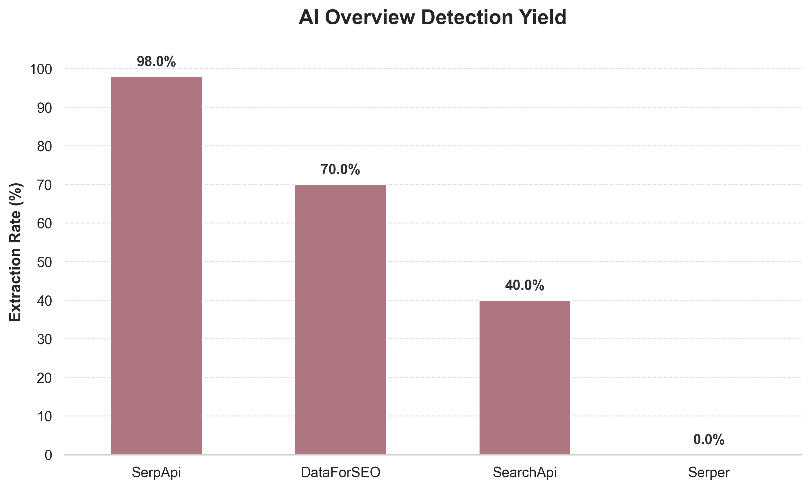
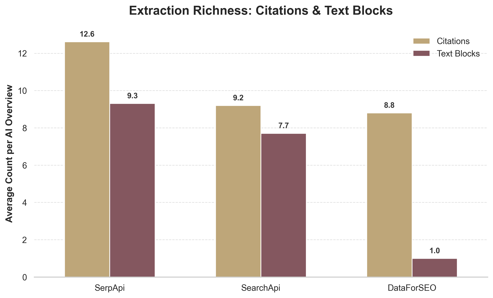

Benchmarking SERP API Fidelity for AI Overviews: A Reproducible Study
If you are building an AI agent or Retrieval-Augmented Generation (RAG) pipeline that searches the web for grounded facts, you are probably relying on a SERP API (Search Engine Results Page Application Programming Interface) to scrape Google and return structured JSON.
For years, simple metrics — latency, uptime, and catalog size — were sufficient to evaluate these APIs. But every major provider now meets baseline expectations for speed and reliability, and those metrics no longer differentiate. In 2026, the most critical element on a Google search result page is the AI Overview: a generative, dynamically assembled answer block that dominates the top of the viewport and is widely perceived as a trustworthy summary of key information.
An AI Overview contains nested markdown, ordered lists, embedded citation arrays, and expandable follow-up questions. This structural complexity makes it uniquely difficult to parse. More importantly, the content of an AI Overview is entirely non-deterministic. Two identical queries executed at the same millisecond can return completely different results — one might produce a three-paragraph overview with ten citations, and the other a standard list of blue links. For each query, Google dynamically decides whether to generate an overview based on server load, session history, and its own classification of query intent.
Most existing API comparisons ignore this non-determinism. They fire a single request, check if a field exists, and declare a winner. This approach is fundamentally flawed. You cannot evaluate the reliability of a SERP API's extraction based on a feature that is not guaranteed to be present in the source HTML.
I built this benchmark to answer a different, much harder question: When Google actually generates an AI Overview, how often does your SERP API detect it, and how much of its structured content survives the extraction process? This is a measure of parsing fidelity, and it is the metric that dictates whether your downstream LLM (Large Language Model) receives a rich, heavily cited answer, or a hallucinated blank space.
The Competitors
I evaluated four major SERP APIs, chosen to represent different architectural approaches and market positions within the ecosystem.
SearchApi
SearchApi is a real-time, highly scalable SERP API built to power production workloads for Fortune 500 companies and AI startups. They advertise robust extraction of structured data from over 100 search engines. SearchApi explicitly targets the AI-native developer market and offers specialized endpoints for fetching asynchronous AI Overview data. Their free tier provides 100 one-time searches.
SerpApi
SerpApi is the incumbent heavyweight in the SERP scraping industry. They have the most established parser catalog and serve as the default baseline in most industry benchmarks. Their architecture handles asynchronous AI Overviews through a separate token-based expansion system. Their free tier provides 250 searches per month.
DataForSEO
DataForSEO takes an enterprise-grade, bulk-processing approach that represents a fundamentally different architectural philosophy. Instead of relying on a REST interface for a single query, they offer complex POST endpoints (such as /v3/serp/google/organic/live/advanced) that allow developers to pass highly specific boolean flags (like expand_ai_overview: true). Their trial credit of $1 covers the benchmark cost.
Serper
Serper (serper.dev) has become popular as the budget-friendly, ultra-fast option for developers building lightweight AI agents. I included them to test a specific hypothesis: does their emphasis on raw speed and low cost come at the expense of parsing fidelity for complex, asynchronous structures like AI Overviews? Their generous free tier of 2,500 one-time credits makes them highly accessible.
Methodology: From 1-to-1 Fidelity to Detection Yield
My initial plan for this benchmark was to measure strict parsing fidelity. I curated a dataset of 50 diverse queries across four intent categories: informational, comparison, definition, and long-tail. To execute these 50 queries, I used Playwright, a headless browser automation framework that controls a real instance of Chromium programmatically. I captured the raw HTML and a screenshot of every result to establish a definitive "gold standard" of ground truth.
My intention was to hit the four APIs with the same 50 queries and then score their JSON outputs directly against my gold standard captures.
The Non-Determinism Pivot
When I began comparing the raw API responses against the gold standard, I discovered the full extent of Google's non-determinism. My Playwright instance triggered an AI Overview for a specific query, but when I routed that exact same query through SearchApi or DataForSEO seconds later, Google often served them a standard SERP without an AI Overview.
This breaks the concept of a 1-to-1 fidelity score. If an API returns a JSON payload with present: False for the AI Overview, there is no way to tell whether its parsing logic failed or whether Google simply declined to serve the generative block. Without knowing what HTML the API actually received from Google, you cannot penalize it for missing a feature that wasn't there.
I pivoted the methodology. Instead of scoring the APIs against my localized gold standard, I evaluated their outputs in aggregate across the dataset, focusing on two metrics that remain valid regardless of whether Google generated an overview for any individual query:
- Detection Yield: Out of 50 attempts, how many valid AI Overviews did the API successfully detect and return?
- Extraction Richness: When the API did detect an AI Overview, how much structured data (citations and text blocks) did it successfully extract?
Ensuring Data Integrity: The 196-Point Audit
To trust the Detection Yield metric, I had to be absolutely certain that the APIs weren't subject to silent failures. A silent failure occurs when Google does serve an AI Overview in the HTML, but the API's parser fails to detect it and returns a standard HTTP 200 response with an empty ai_overview field.
To mathematically prove the absence of silent failures, I wrote a programmatic audit script (audit_192_points.py) that scanned all 196 raw JSON response files returned by the providers. The script employed two heuristics:
- The Schema Sweep: It recursively traversed the deeply nested JSON trees of every "empty" response, hunting for orphaned keys that shouldn't be there unless an AI Overview was present (e.g.,
ai_overview,generative,asynchronous_ai_overview). - The Blob Sweep: It scanned every string value in the JSON for contiguous blocks of text longer than 300 characters. Since standard organic search snippets are strictly truncated to around 150 characters, any massive string is a dead giveaway of an unparsed AI Overview, Knowledge Panel, or Featured Snippet.
The results of this audit were definitive. After manually reviewing the flagged anomalies, I confirmed that zero false negatives existed. Every time an API reported that no AI Overview was present, it was telling the truth: Google had not served one.
This audit confirmed that the Detection Yield metric could be trusted completely. If an API returned an AI Overview, it earned a point. If it didn't, it was a victim of Google's non-determinism, but its parser was not at fault.
Results
With the data integrity mathematically proven, we can examine how the four providers actually performed when tasked with extracting Google's most complex search feature.
Detection Yield
Detection Yield measures the raw capability of the API to successfully trigger and capture the AI Overview. Because Google frequently serves these overviews asynchronously (requiring a second network request to fetch the text using a page_token), this metric heavily penalizes APIs that cannot handle dynamic, multi-stage rendering.

The Detection Yield chart represents the percentage of the 50 queries where the API successfully returned a populated AI Overview.
SerpApi dominated this category with a 98.0% Adjusted Yield. Out of 50 queries, SerpApi successfully extracted an AI Overview 49 times. Their architecture, which seamlessly manages the asynchronous token expansion behind the scenes, effectively forces Google to yield the generative block nearly every time.
DataForSEO secured second place with a 70.0% Adjusted Yield (35 successful extractions). It is worth noting that my initial, naive analysis pegged them at 92%. However, my data integrity audit revealed a critical flaw: DataForSEO frequently returned a JSON object with type: "ai_overview" and asynchronous_ai_overview: true, but completely null fields for the text and markdown. They were returning a placeholder indicating that an overview was generating, but they failed to wait for the final text. I adjusted their yield downward to 70% to reflect only the responses that contained actual usable text.
SearchApi struggled significantly, achieving a 60.6% Adjusted Yield (20 successful extractions). This low yield was compounded by two distinct issues. First, for 17 of the 50 queries, SearchApi returned a 429 Client Error: Too Many Requests. This rate-limiting occurred despite the queries being fired sequentially with generous delays. Second, for 9 queries, SearchApi returned a valid AI Overview object, but the internal text read {"error": "An AI Overview is not available for this search"}. This indicates that their backend successfully parsed the initial page_token, but their secondary request to the engine=google_ai_overview endpoint failed to retrieve the content.
Serper completely failed the benchmark, posting a 0.0% Yield. A deep algorithmic scan of all 50 raw JSON responses confirmed that Serper does not support AI Overviews. They do not extract them, they do not attempt to expand them, and they drop the data entirely from their payload.
Extraction Richness
Detecting the AI Overview is necessary, but the true value for RAG pipelines lies in the structured data. If an API returns a massive wall of raw text, the downstream LLM has no idea which sentences correspond to which URLs, and the chain of citation is destroyed.
Extraction Richness measures how granularly the API parses the overview into structured data.

SerpApi again proved its dominance. When they extracted an AI Overview, they provided an average of 12.6 distinct citations and 9.3 discrete text blocks. Their parser aggressively breaks down the HTML, separating headers, paragraphs, and list items into distinct JSON objects. This makes it straightforward to map specific claims to their source URLs programmatically.
SearchApi, despite their yield struggles, demonstrated excellent parsing logic when they did successfully return an overview. They averaged 9.2 citations and 7.7 text blocks, proving that their extraction algorithm is robust and highly structured. If they resolve their rate-limiting and asynchronous expansion issues, their payload quality is top-tier.
DataForSEO revealed a significant architectural compromise. While they successfully extracted citations (averaging 8.8 per query), they failed to parse the text into structured blocks, averaging just 1.0 text block per query. A deep dive into their raw JSON revealed why: DataForSEO largely abandons granular parsing for the text, instead collapsing the entire AI Overview into a single markdown field. While this is better than losing the text entirely, it shifts the parsing burden onto the developer, who must now write custom regex or markdown parsers to extract the content.
What the Data Actually Says
If you are building an application that depends on Google search data, you should not choose an API based on a simple ranking. You must align the API's architecture with your specific use case. Here is what the data dictates:
The Enterprise RAG Pipeline (Winner: SerpApi)
If you are building a production RAG pipeline where citation integrity is paramount — meaning you absolutely must know which sentence came from which URL to prevent hallucinations — SerpApi is the undisputed choice. Their near-perfect 98% detection yield ensures you rarely miss the generative answer, and their aggressive structural parsing (averaging 9.3 text blocks) means you can feed your LLM highly structured, easily verifiable JSON.
The Raw Data Ingestion Engine (Viable Alternative: DataForSEO)
If you are operating at scale, have strict budget constraints, and employ data engineers who are comfortable writing custom parsers, DataForSEO is a powerful option. Their POST-based architecture and robust citation extraction are excellent. However, you must be prepared to write custom logic to parse their monolithic markdown field, and you must implement robust retry logic to handle the instances where they return empty asynchronous placeholders.
The Lightweight Agent (Winner: Serper)
If you are building an autonomous agent (using a framework like AutoGPT or an MCP integration) that only needs standard organic links, news, or knowledge graphs to function, Serper remains the fastest and cheapest option on the market. However, you must accept that your agent will be entirely blind to AI Overviews. If Google answers a query exclusively within the generative block, your agent will not see it.
The Contender (Needs Polish: SearchApi)
SearchApi possesses excellent parsing logic, as evidenced by their strong performance in Extraction Richness. Their JSON structure is clean, logical, and highly usable. However, I cannot currently recommend them for production workloads that rely on AI Overviews due to infrastructure instability. Encountering 17 429 Too Many Requests errors on a slow, sequential 50-query loop is unacceptable for an enterprise provider, and their frequent failures during asynchronous token expansion indicate that their scraping backend is struggling to maintain sessions with Google's servers. If they stabilize their infrastructure, they will be a formidable competitor to SerpApi.
Reproducing This Benchmark
Real technical research has a rig, and every claim in this article is fully reproducible. I have open-sourced the entire benchmarking framework, including the Python harness, the scoring logic, and the exact raw JSON responses used to generate these charts.
To reproduce this benchmark from scratch:
Clone the repo, add your API keys to config.yaml, and run python benchmark/run.py followed by python analysis/analyze.py. The runner queries all four SERP APIs with the same 50 queries and extracts the AI Overviews using the provider-specific parsing modules. The analyzer script generates the comparison charts and aggregate yield statistics published in this article.
You can view the code, audit the raw data, and run the rig yourself at my GitHub repository here: SERP API Benchmark Framework
What I'd Measure Next
This benchmark captures AI Overview parsing fidelity at a single point in time, but search engine behavior changes frequently. If I were to expand this research, I would focus on two vectors:
- Temporal Stability: Google regularly runs A/B tests on its SERP layout. A robust API doesn't just parse the DOM today; it adapts to undocumented changes immediately. I would automate this benchmark to run weekly via GitHub Actions to measure how quickly each provider updates their parsers when Google changes the DOM.
- Geographic Variance: This benchmark used US-based location parameters. Google's rollout of AI Overviews varies significantly by region and language. Testing the yield of these APIs across European and Asian IP spaces would reveal whether their parsing architectures are globally robust or narrowly optimized for North America.